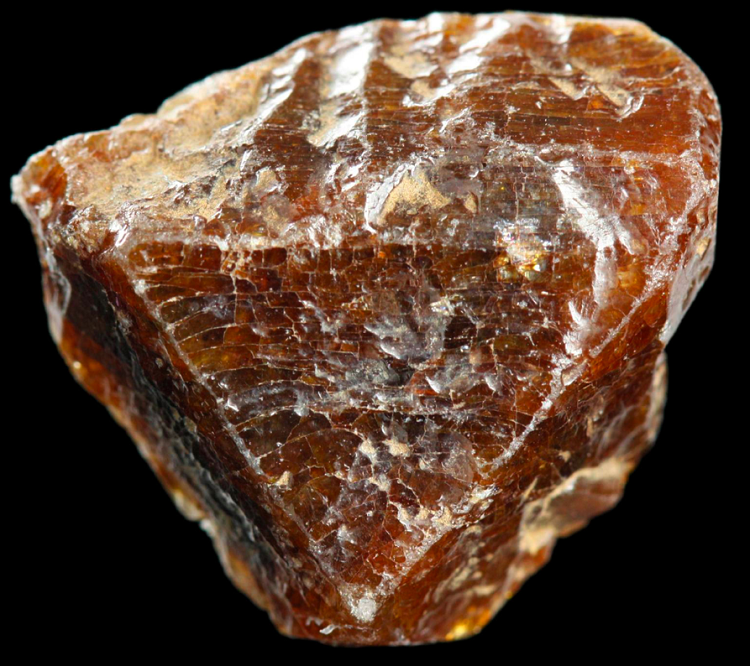

Франций

Фра́нций (химический символ — Fr, от лат. Francium) — радиоактивный химический элемент 1-й группы (по устаревшей классификации — главной подгруппы первой группы, IA) седьмого периода периодической системы химических элементов Д. И. Менделеева с атомным номером 87.
Этот элемент был предсказан Д. И. Менделеевым (как «эка-цезий») ещё в 1870 году. Предполагаемая атомная масса для этого элемента должна была находиться в диапазоне 210—230. В 1871 г. в статье «Естественная система элементов и применение её к указанию свойств неоткрытых элементов».
Франций выделяют путем электрофореза, экстракции, хроматографией на органических и неорганических сорбентах, соосаждением перхлоратом или кремневольфраматом цезия, со свободной кремневольфрамовой кислотой. Время выделения франция этими методами 25—30 минут. От рубидия и цезия металл отделяют методом распределительной бумажной хроматографии (франций быстро двигается с фронтом раствора и собирается в самом конце бумажной ленты), с помощью катионообменных смол, и т. д.В настоящее время франций и его соединения имеют мало практических применений в связи с малым периодом полураспада и высокой радиоактивностью. Франций-223 используется для быстрого определения актиния-227 в природных объектах (по дочернему бета-излучению 223Fr) . Ранее, для этого а также для исследования миграции ионов тяжёлых щелочных металлов в биологических объектах. Ранее для этого измеряли активность всех продуктов распада актиния-227 после достижения равновесия через 3 месяца. М. Перей разработала очень быстрый метод определения по дочернему францию-223. Франций отделяют от актиния через 3 часа после его выделения из природных объектов, и измеряют его бета-активность. Этим методом можно с высокой точностью определять актиний даже в присутствии других радиоактивных элементов.